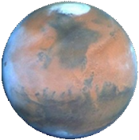
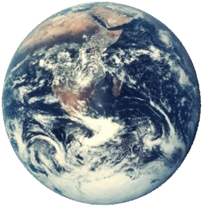
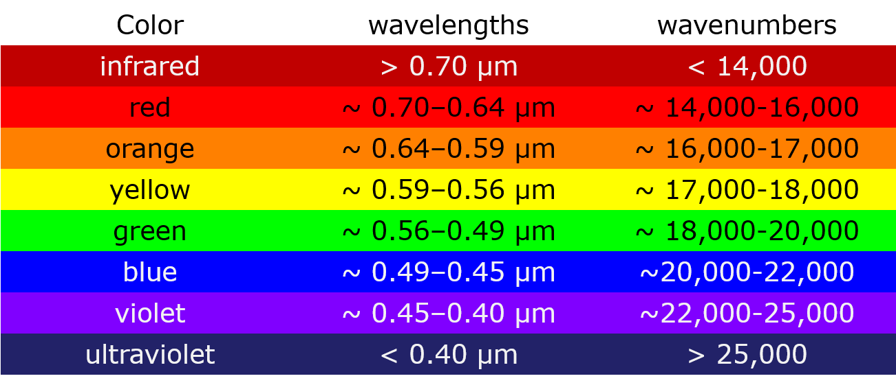
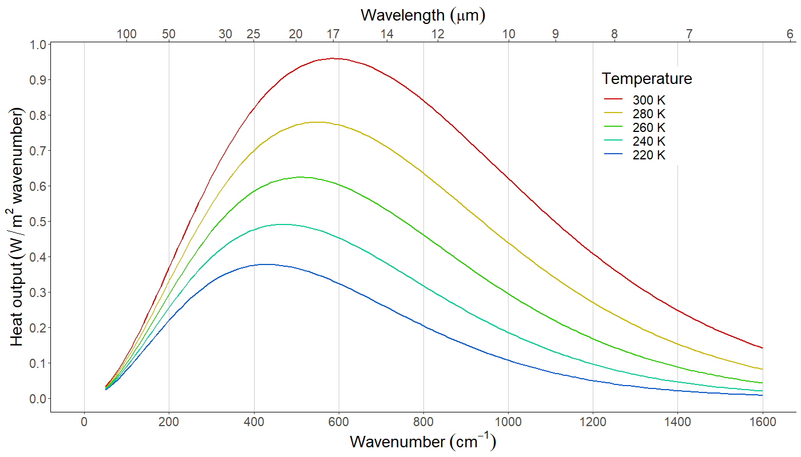
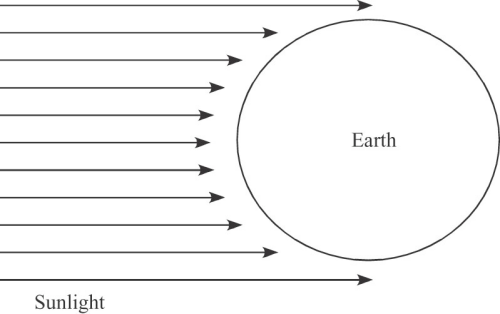
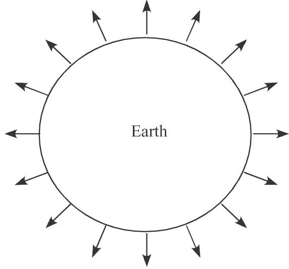

Energy Balance and Climate
EES 3310/5310
Global Climate Change
Jonathan Gilligan
Class #3: Mon. Aug. 27 2018
Looking for a Good Home
|  |  |

|
|
Bad \(-28^\circ\mathrm{F}\) |
Good \(71^\circ\mathrm{F}\) |
Worst \(800^\circ\mathrm{F}\) |
Basic Concepts
Vocabulary
- Energy, Heat:
- Heat = energy flowing spontaneously from hot to cold
- Power: speed at which energy flows or transforms \[ \text{Power, Flux} = \text{Heat flow} / \text{Time} \] \[ \text{Heat, Energy} = \text{Power} \times \text{Time} \]
- Intensity: Concentration of power \[ \text{Intensity} = \text{Power} / \text{Area} \] \[ \text{Power} = \text{Intensity} \times \text{Area} \]
Temperature of a planet
Basic principle:
Steady temperature if and only if \[ \text{Power}_{\text{in}} = \text{Power}_{\text{out}} \]
How can heat get in or out?
- Electromagnetic radiation
Electromagnetic Waves
- Color and brightness
-
Color:
- Two ways to measure color:
- Wavelength (\(\lambda\))
- Wavenumber (\(n = 1/\lambda\))
-
Archer mostly uses wavenumber
- Math is simpler that way
-
Brightness:
- Intensity (power/area, Watts/square meter)
Colors

All you need to think about is
shortwave vs. longwave radiation.
Shortwave and longwave:
- Shortwave:
- Near-infrared, visible, ultraviolet
- \(\lambda < 3 \mu\mathrm{m}\)
- \(n > 3,300 \text{cm}^{-1}\) (cycles per centimeter)
- Longwave:
- Mid-infrared, far-infrared
- \(\lambda > 3 \mu\mathrm{m}\)
- \(n < 3,300 \text{cm}^{-1}\)
More on this in the next class …
4 Laws of Radiation
- All objects continually radiate energy
- Hotter objects are brighter
- Hotter objects radiate at shorter wavelengths
- Objects that are good absorbers are also good emitters
- Black objects emit & absorb the most
- Transparent and white objects emit & absorb the least
Blackbody Radiation
Blackbody Radiation
Emissivity (\(\varepsilon\)) measures how black something is:
- \(\varepsilon = 1\) for perfectly black
- \(\varepsilon = 0\) for perfectly white or transparent
- In between for gray.
- Black, white, and gray: \(\varepsilon\) is the same for all wavelengths.
- Colored objects: \(\varepsilon\) is a function of wavelength.
- For simplicity: start by assuming everything is black, white, or gray.
Remember: Good emitters are good absorbers
Fundamental rule: Temperature and emissivity determine radiation.
Heating Up: What Changes??

Heating Up: What Changes?
- Hotter temperature:
- Brighter (greater intensity)
- Bluer (greater wavenumber, shorter wavelength)
A curious thing:
- A hot black object glows with color!
Total intensity =
area under curve

Mathematical Description
Blackbody Radiation
|
Intensity (brightness): Stefan-Boltzmann law \[ I = \varepsilon \sigma T^4 \] after Josef Stefanand Ludwig Boltzmann
|
|
Color: Peak wavenumber proportional to (Kelvin) temperature.
Helpful Hint:
Fourth power on a calculator: press the \(x^2\) button twice.
Sun and Earth
| Longwave (\(\lambda > 3~\text{micron}\)) | 2% |
| Visible & Near-IR (\(0.4 < \lambda < 3~\text{micron}\)) | 91% |
| Ultraviolet (\(\lambda < 0.4~\text{micron}\)) | 7% |
| Total Shortwave (UV + Vis + Near-IR) | 98% |
Efficiency of Light Bulbs
| Type of Bulb | Efficiency |
|---|---|
| Standard 40W | 1.9% |
| Standard 60W | 2.1% |
| Standard 100W | 2.6% |
| Quartz Halogen | 3.5% |
| Ideal black body @ 7000K | 14.0% |
| Compact Fluorescent | 7–10% |
| LED | 8–15% |
- 7000K is the optimal temperature for a black body to emit visible light, but it will melt every known substance.
- Standard light bulbs operate at around 2000–3300 K.
Calculating Earth’s Temperature:
Bare-Rock Model
Basics
Steady Temperature
- Heat in must balance heat out
- \(\text{Total Heat Flux (Power)} = \text{Area} \times \text{Intensity}\)
- Total heat flux in (\(F_{\text{in}}\)):
- Intensity depends on solar constant and albedo
- Does not depend on earth’s temperature
- Total heat flux out (\(F_{\text{out}}\)):
- Intensity depends on earth’s temperature and emissivity
- Total heat flux in (\(F_{\text{in}}\)):
- Strategy:
- Figure out \(F_{\text{in}}\).
- Figure out temperature \(T\) that makes \(F_{\text{out}} = F_{\text{in}}\).
Solar Constant and
Inverse Square Law
- Total flux (power) radiated from sun doesn’t change with distance.
- At a distance \(r\) total flux spreads over sphere of radius \(r\)
-
Intensity = Total Flux / Area:
- Proportional to \(1/r^2\).
- At edge of Earth’s atmosphere, solar intensity = \(1350~\mathrm{W}/\mathrm{m}^2\).
What is \(F_{\text{in}}\)?
- \(F_{\text{in}} = \text{Area} \times \text{Intensity absorbed}\)
- \(\text{Intensity absorbed} = (1 - \alpha) \times I_{\text{in}}\)
- \(I_{\text{in}} = 1350~\mathrm{W}/\mathrm{m}^2\)
- Average albedo \(\alpha = 0.30\) (30% of sunlight is reflected)
- \(\text{Intensity absorbed} = (1 - \alpha) \times I_{\text{in}}\)
What is area?
|
 |
What is \(F_{\text{in}}\)?
- \(F_{\text{in}} = \pi r_{\text{Earth}}^2 \times (1 - \alpha) I_{\text{in}}\)
- \(\pi r^2 = 1.3 \times 10^{14} \mathrm{m}^2\)
- \(\alpha = 0.30 \Rightarrow (1 - \alpha) = 0.70\)
- \(I_{\text{in}} = 1350~\mathrm{W}/\mathrm{m}^2\)
\(F_{\text{in}} = 1.2 \times 10^{17}~\text{Watt}\)
- 11,000 times total human energy production.
What is \(F_{\text{out}}\)?
|
 |
Putting it all together
\[F_{\text{out}} = F_{\text{in}}\]
\[4 \pi r^2 \times \varepsilon \sigma T^4 = \pi r^2 (1 - \alpha) I_{\text{in}}\]
\[4 \color{red}{\pi r^2} \times \varepsilon \sigma T^4 = \color{red}{\pi r^2} (1 - \alpha) I_{\text{in}}\]
\[4 \varepsilon \sigma T^4 = (1 - \alpha) I_{\text{in}}\\\]
\[T^4 = \frac{(1 - \alpha) I_{\text{in}}}{4 \varepsilon \sigma}\\\]
\[T = \sqrt[4]{\frac{(1 - \alpha) I_{\text{in}}}{4 \varepsilon \sigma}}\]
Temperature of Earth
- Steady Temperature:
- Heat flux in must balance heat flux out (\(F_{\text{out}} = F_{\text{in}}\)).
- \(F_{\text{in}}\):
- Does not depend on earth’s temperature.
- Depends on solar constant and earth’s albedo.
- \(F_{\text{out}}\):
- Depends on earth’s temperature.
- \(T\) adjusts until heat out = heat in. \[ T = \sqrt[4]{\frac{(1 - \alpha) I_{\text{in}}}{4\varepsilon\sigma}} \]
Helpful hint:
To take the fourth root on a calculator, press the square-root key (\(\scriptstyle\sqrt{}\)) twice
Temperature of Earth
\[ T = \sqrt[4]{\frac{(1 - \alpha) I_{\text{in}}}{4\varepsilon\sigma}} \]
Earth:
(Note: My numbers are slightly different from Archer’s textbook)
- \(I_{\text{in}} = 1350~\mathrm{W}/\mathrm{m}^2\)
- \(\alpha = 0.30\)
- \(\varepsilon = 1\)
- \(\sigma = 5.67 \times 10^{-8}~\mathrm{W}/(\mathrm{m}^2\mathrm{K}^4)\)
- Calculate \(T\):
- \(T = 254~\mathrm{K} = -19^\circ\mathrm{C} = -2^\circ\mathrm{F}\).
If the sun got 5% brighter,
how much warmer would the earth become?
\[ T = \sqrt[4]{\frac{(1 - \alpha) I_{\text{in}}}{4 \varepsilon \sigma}}\\\]
- Normal: \(I_{\text{in}} = 1350~\mathrm{W}/\mathrm{m}^2\):
- \(T = 254~\mathrm{K}\)
- 5% Brighter: \(I_{\text{in}} = 1.05 \times 1350~\mathrm{W}/\mathrm{m}^2 = 1418~\mathrm{W}/\mathrm{m}^2\):
- \(T = 257~\mathrm{K}\)
- \(\Delta T = 3~\mathrm{K} = 6^\circ\mathrm{F}\)
Temperature of Earth
\[ T = \sqrt[4]{\frac{(1 - \alpha) I_{\text{in}}}{4\varepsilon\sigma}} \]
Earth:
(Note: My numbers are slightly different from Archer’s textbook)
- \(I_{\text{in}} = 1350~\mathrm{W}/\mathrm{m}^2\)
- \(\alpha = 0.30\)
- \(\varepsilon = 1\)
- \(\sigma = 5.67 \times 10^{-8}~\mathrm{W}/(\mathrm{m}^2\mathrm{K}^4)\)
- \(T = 254~\mathrm{K} = -19^\circ\mathrm{C} = -2^\circ\mathrm{F}\).
How does this compare to Earth’s actual temperature?
Radiative Temperature
Satellites orbiting in space can measure longwave radiation from earth
To the satellites, the earth looks very much like a blackbody at the bare-rock temperature (254 K).
Thus, scientists generally call the bare-rock temperature the radiative temperature because it describes the radiation coming off the earth.
- However, the surface temperature of the earth is around \(295~\mathrm{K} = 71^\circ\mathrm{F}\), which is significantly different from the radiative, or bare-rock, temperature.
The Terrestrial Planets
|
|
||
|
Mars \(240~\mathrm{K}\) |
Earth \(295~\mathrm{K}\) |
Venus \(700~\mathrm{K}\) |
Terrestrial Planets
| Earth | Mars | Venus | |
|---|---|---|---|
| Distance from sun | 1 AU | 1.5 AU | 0.72 AU |
| \(1 / \text{Distance}^2\) | 1.00 | 0.44 | 1.9 |
| Solar constant | \(1350~\mathrm{W}/\mathrm{m}^2\) | \(600~\mathrm{W}/\mathrm{m}^2\) | \(2604~\mathrm{W}/\mathrm{m}^2\) |
| Albedo | 0.30 | 0.17 | 0.71 |
| \(T_{\text{bare rock}}\) | \(254~\mathrm{K}~( -2^\circ\mathrm{F})\) | \(216~\mathrm{K}~( -70^\circ\mathrm{F})\) | \(240~\mathrm{K}~( -27^\circ\mathrm{F})\) |
| \(T_{\text{surface}}\) | \(295~\mathrm{K}~( 71^\circ\mathrm{F})\) | \(240~\mathrm{K}~( -28^\circ\mathrm{F})\) | \(700~\mathrm{K}~( 800^\circ\mathrm{F})\) |
| \(\Delta_T\) | \(41~\mathrm{K}~( 74^\circ\mathrm{F})\) | \(24~\mathrm{K}~( 42^\circ\mathrm{F})\) | \(460~\mathrm{K}~( 828^\circ\mathrm{F})\) |